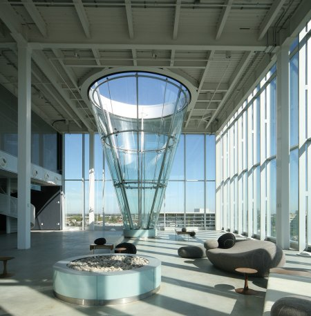

Nageons dans un cornet de glace !
Formulation du problème
On dispose d’une piscine dont la forme est un cône de révolution : la pointe est fixée au sol, et la hauteur du cône est verticale. Nous allons remplir celle-ci avec de l’eau …
L’angle au sommet du cône est de 73,8 grades. On suppose que la hauteur du cône est suffisamment grande pour qu’il ne déborde pas dans le cadre de ce qui va se passer dans cette énigme. La piscine étant initialement vide, on la remplit avec un débit constant de 347,9 litres d’eau par heure.
Comme tous les propriétaires de piscines le savent bien, l’eau s’évapore avec une vitesse qui dépend de nombreux paramètres. Ici, on considère que l’eau s’évapore à raison de 2,54 litres par jour et par mètre carré de surface d’eau à l’air libre (cette surface est donc circulaire).
Question : Quelle est la hauteur maximale d’eau dans le cône ?

Solution
Maintenant, réfléchissons un peu : le temps passe … le réservoir se remplit … donc la surface à l’air libre augmente … donc la quantité d’eau qui s’évapore augmente aussi …
Intuitivement on comprend qu’à partir d’un moment la surface va être si grande, que le débit d’évaporation va compenser celui de remplissage, et l’on s’attend à atteindre un régime stationnaire. Pour le prouver, modélisons le système physique, qui est un système ouvert :
Le système à l’instant \(t\) possède un volume d’eau \(V(t)\) dont la surface à l’air libre est \(S(t)\). On note \(D\) le débit de remplissage (en \(L/h\)), et \(e\) celui d’évaporation (en \(L.h^{-1}.m^{-2}\)) donnés dans l’énoncé. Ainsi les volumes d’eau \(V_{\text{entrant}}\) et \(V_{\text{sortant}}\) sont donnés par : \[\left\{\begin{array}{l}V_{\text{entrant}}(t)=Dt\\V_{\text{sortant}}(t)=etS(t)\end{array}\right.\]
Comme le système est ouvert, la variation du volume d’eau est régie par l’équation : \[\frac{dV}{dt}=V_{\text{entrant}}(t)-V_{\text{sortant}}(t)\]
Par conséquent le système est régit par l’équation différentielle suivante : \[\frac{dV}{dt}=Dt-etS(t)\]
Ce qui nous intéresse nous est d’étudier les variations de la hauteur d’eau \(h(t)\). Reste donc à exprimer \(V(t)\) et \(S(t)\) en fonction de \(h(t)\) pour en déduire une équation différentielle portant sur \(h(t)\).
Si on note \(r(t)\) le rayon de la surface circulaire \(S(t)\) on a d’une part \[S(t)=\pi r(t)^2\] Et d’autre part en notant \(\alpha\) l’angle au sommet du cône on a \[r(t)=\tan(\alpha)h(t)\]
D’où on en déduit \[S(t)=\pi \tan^2(\alpha)h(t)^2\]
Le volume d’un cône est une formule connue : \[V(t)=\frac{1}{3}S(t)h(t)=\frac{1}{3}\pi \tan^2(\alpha)h(t)^3\]
En dérivant on obtient : \[\frac{dV}{dt}=\pi \tan^2(\alpha)\frac{dh}{dt}h(t)^2\]
On aboutit finalement à l’équation différentielle vérifiée par \(h(t)\) : \[\color{green}{\left\{\begin{array}{l}\frac{dh}{dt}=t\left[\left(\frac{D}{\pi \tan^2(\alpha)}\right)\frac{1}{h(t)^2}-e\right]\\h(0)=0\end{array}\right.}\]
Cette équation différentielle possède une unique solution d’après le théorème de Cauchy-Lipschitz, mais elle ne s’écrit pas sous forme explicite. Représentons la tout de même dans le graphe ci-dessous (obtenu par une méthode numérique de Runge-Kutta d’ordre 4)
On constate effectivement que le système tend vers un régime stationnaire, autrement dit lorsque \(t\to +\infty\) on a \(h(t)\to h(\infty)\) une constante, qui va être la hauteur limite qui nous intéresse. Pour la déterminer remarquons que si \(h\) tend vers une constante, alors c’est que sa dérivée \(\frac{dh}{dt}\) tend vers \(0\). Or à droite dans l’équation le terme \(t\) est strictement positif, donc la dérivée s’annule uniquement pour : \[\left(\frac{D}{\pi \tan^2(\alpha)}\right)\frac{1}{h(\infty)^2}-e=0\]
On en conclut que la hauteur limite recherchée est : \[\color{green}{h(\infty)=\sqrt{\frac{D}{\pi e\tan^2(\alpha)}}}\]
qui est bien homogène à une distance (en \(m\)).
De plus on remarque que si le débit de remplissage \(D\) augmente (à \(e\) et \(\alpha\) fixés) la hauteur limite sera plus grande ; et de même si inversement c’est le débit d’évaporation qui augmente alors la hauteur limite sera plus petite, ce qui semble cohérent. Enfin si l’angle du cône \(\alpha\) diminue, alors celui-ci sera plus étroit et la surface à l’air libre plus petite, donc une évaporation moindre et une hauteur limite plus grande.
Application numérique :
On a \(D=347,9~L.h^{-1}\), \(e=\frac{2,54}{24}~L.h^{-1}.m^{-2}\) et \(\alpha=\frac{\pi}{200}.73,8~rad\). On obtient ainsi une hauteur limite de \[\color{green}{h(\infty)\approx 14.119~m}\]